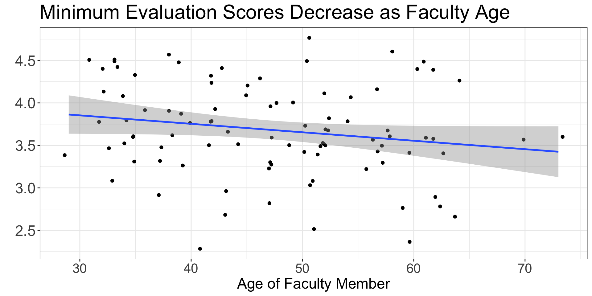
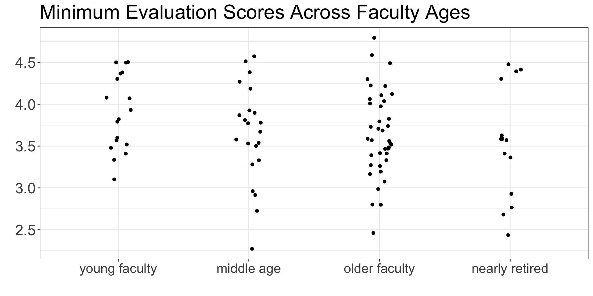
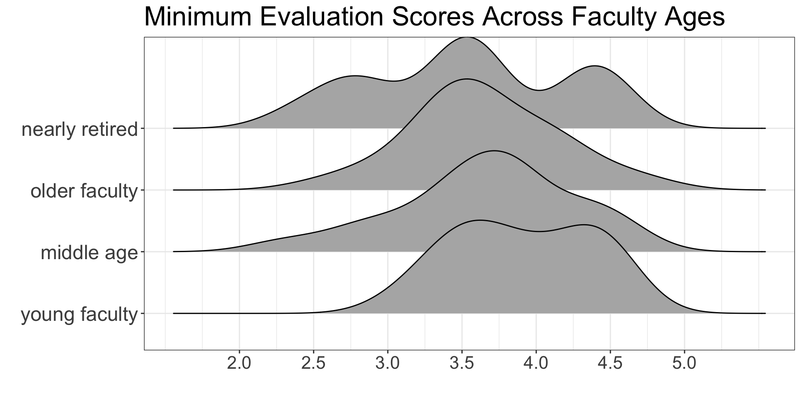
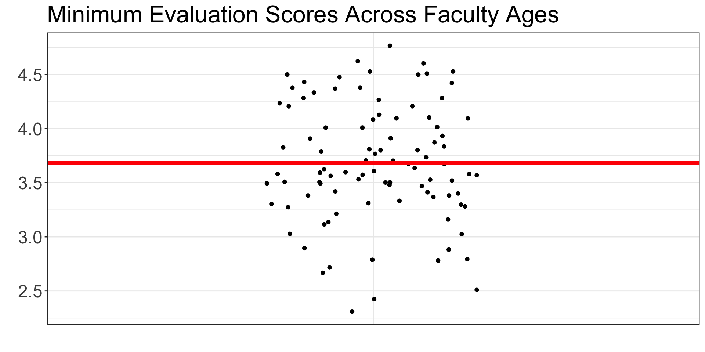
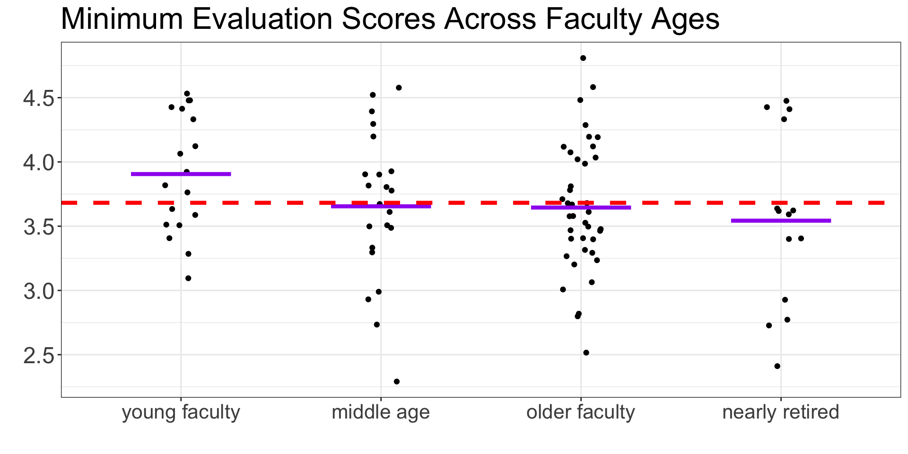
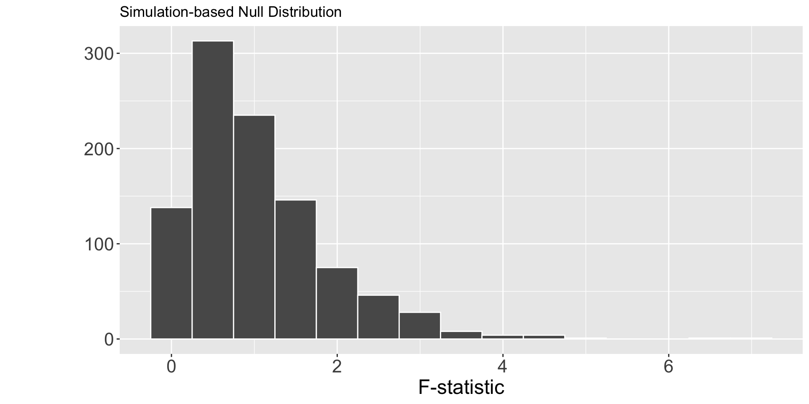
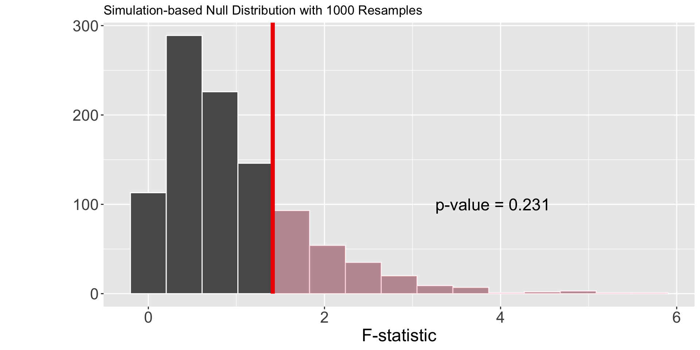

gapminder2007 <- gapminder %>%
filter(year == 2007) %>%
select(country, lifeExp, continent, gdpPercap)ANalysis Of VAriance
Lab 7 Recap
Common Mistakes
Question 8 (Hypothesis Test Conclusion)
If you rejected the null hypothesis, there is evidence of a linear relationship between the size of a crab and the latitude in which it lives.
If you failed to reject the null hypothesis, there is insufficient evidence of a linear relationship between the size of a crab and the latitude in which it lives.
Notice how both interpretations are in terms of the alternative hypothesis?
If you always write your conclusion in terms of \(H_A\), then you will never accidentally “accept” the null hypothesis.
Common Mistakes
Question 11 (Interpret Confidence Interval):
We need to be specific about the what parameter we believe is in our interval. The slope statistic is measuring the relationship between which variables?
We’re analyzing the linear relationship between the size of a crab and the latitude in which it lives!
What population does this interval apply to? Where were these crabs sampled from? That is the population your interval applies to!
The fiddler crabs were sampled from 13 salt marshes, but where were these salt marshes located? What population might they belong to?
Common Mistakes
Question 12 (Apply Confidence Interval)
Bergmann’s Rule suggests that organisms are larger in larger latitudes (further from the equator).
Does your interval suggest this is true for fiddler crabs?
Week 9
Final Project First Draft
Step 1 - Due by tonight!
- Introduction (Data description, research questions)
Step 2 - Due by Thursday
- Methods (Data visualizations)
- Results (Data analysis)
Step 3 - Due by Sunday
- Discussion
- Conclusion
One-Way ANOVA
Compares the means of three of more groups to detect if the means of the groups are different.
Two “Flavors” of ANOVA
In my mind, there are two different options for incorporating an ANOVA into your analysis.
Option 1:
There is a categorical variable with 3+ groups that you would like to use for your regression.
Option 2:
There is a numerical variable that you would like to use to create 3+ groups to incorporate into your regression.
Let’s check out what I mean!
Categorical Variable
Independence Violations
In Lab 8 you should have found that each country has multiple observations, which are not independent. One way to get around this is to filter() the data to only use one year.
Discretizing a Continuous Variable
Independence Violations
Last week we noticed that there are multiple observations for each faculty member which are not independent. One way to get around this is to collapse these multiple observations into a single number.
Now…
Carrying out an ANOVA
Steps for an ANOVA
- Compare how different a group of means are
- Scale the differences relative to the variability of the groups
- Summarize the differences with one number (an F-statistic)
Visualizations for an ANOVA
Visualizations for an ANOVA
We want visualizations that allow for us to easily compare:
- the center (mean) of the groups
- the spread (variability) of the groups
Step 1: Compare your groups
What can you say about the differences between the age groups?
What can you say about the variability within the age groups?
Step 2: Find the overall mean
This ignores the groups and finds one mean for every observation!
Step 3: Find the group means
Step 4: Calculate the sum of squares between groups
Step 5: Calculate the sum of squares within groups
Step 6: Calculate the F-statistic

Step 7: Find the p-value

F-distribution
An \(F\)-distribution is a variant of the \(t\)-distribution, and is also defined by degrees of freedom.
This distribution is defined by two different degrees of freedom:
- from the numerator (MSG) : \(k\) (number of groups) \(- 1\)
- from the denominator (MSE) : \(n\) (number of observations) \(- k\)
Exploring Different F-distributions
Let’s play around and see how these two degrees of freedom change the shape of the F-distribution:
Do you always use an F-distribution to get the p-value?
NO!
Conditions of an ANOVA
- Independence of observations
Observations are independent within groups and between groups
- Normality of the residuals
The distribution of residuals for each group is approximately normal
- Equal variability of the groups
The spread of the distributions are similar across groups
Choosing a Method
Which condition(s) are required to use “theory-based” methods?
All three!
Which condition(s) are required to use “simulation-based” methods?
All but normality!

What do you think? Which method should we use?
Simulation-based Methods
Step 1: Calculating the Observed F-statistic
Response: min_eval (numeric)
Explanatory: age_cat (factor)
# A tibble: 1 × 1
stat
<dbl>
1 1.41Step 2: Simulating what could have happened under \(H_0\)
How could we use cards to simulate what minimum evaluation score a professor would have gotten, if their score was independent from their age?
Another Permutation Distribution
Another Permutation Distribution
Why doesn’t the distribution have negative numbers?
Visualizing the p-value
Visualizing the p-value
Making a Decision & Reaching a Conclusion
For a p-value of 0.24, what decision would you reach regarding your hypothesis test?
What would you conclude regarding the mean minimum evaluation score for different age groups of faculty?
Large p-values \(\neq\) evidence for the null hypothesis!

What if we didn’t believe the normality condition was violated?
Theory-based Methods
| term | df | sumsq | meansq | statistic | p.value |
|---|---|---|---|---|---|
| age_cat | 3 | 1.24198 | 0.4139932 | 1.412556 | 0.2443174 |
| Residuals | 90 | 26.37728 | 0.2930808 | NA | NA |
Is this the same statistic as before?
What distribution was used to calculate the p.value?
Making a Decision & Reaching a Conclusion
For a p-value of 0.244, what decision would you reach regarding your hypothesis test?
What would you conclude regarding the mean minimum evaluation score for different age groups of faculty?
Did the two methods yield different results?
What does that imply about the normality condition?
Assessing Independence Activity
With other students analyzing the same data…
evaluate the within group independence condition
evaluate the between group independence condition
Final Project Work Session
Introduction & Research Questions
Outline the two questions your research seeks to address.
- You will have one question for each one-way ANOVA model
- Your question should be in terms of “differences in group means” not “relationships”